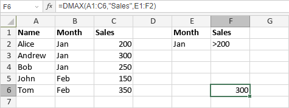

DMAX funkcija
DMAX funkcija je jedna od funkcija baze podataka. Koristi se za vraćanje najvećeg broja u polju (koloni) zapisa u listi ili bazi podataka koji odgovaraju uslovima koje navedete.
Sintaksa
DMAX(database, field, criteria)
DMAX funkcija ima sledeće argumente:
| Argument | Opis |
|---|---|
| database | Opseg ćelija koje čine bazu podataka. Mora da sadrži zaglavlja kolona u prvom redu. |
| field | Argument koji određuje koje polje (tj. kolona) treba da se koristi. Može se navesti kao broj odgovarajuće kolone ili kao zaglavlje kolone navedeno u navodnicima. |
| criteria | Opseg ćelija koji sadrži uslove. Mora da sadrži najmanje jedno ime polja (zaglavlje kolone) i najmanje jednu ćeliju ispod koja određuje uslov koji će se primeniti na to polje u bazi podataka. Opseg ćelija criteria ne bi trebalo da se preklapa sa opsegom database. |
Napomene
Kako primeniti DMAX funkciju.
Primeri
Slika ispod prikazuje rezultat koji vraća DMAX funkcija.
